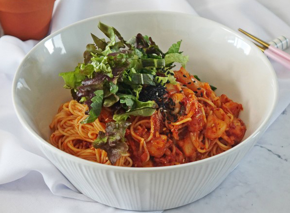

비빔국수
 면을 삶을 물을 가스렌지에 올린 후 양념장을 먼저 만들어준답니다. 잘게 썰은 김치에 고추장 1T, 간장1T, 설탕1T, 고추가루 1/2T, 참깨 1/2T, 참기름 1/2T 를 넣고 잘 섞어준답니다. 고추가루가 들어가기에 미리 양념장을 만들어서 고추가루를 불려주면 맛이 더 좋겠죠. 양념장은 뭐든 미리 만들어놓으면 숙성도되고, 맛이 조화를 이뤄서 더 맛있더라구요. 소면을 냄비에 삶다보면 물이 끓어넘쳐서 대참사를 당할때가 많죠~ 중간중간 물이 끓어오르면 물반컵정도를 부어서 참사를 막아주세요.
잔치국수
- 멸치와 무우 그리고 다시마로 육수를..
- 육수에 간마늘과 까나리 액젓을..
- 소면을 끓을 땐 찬물을 조금 넣고 한번 더..
- 찬물에 헹궈주어야 퍼지지 않아요.
육숫물에 애호박과 당근을 살짝 저는 길게 썰어주었답니다. 면과 비슷한 식감이 날 수 있도록 길게 잘라주었는데 여기에 취향껏 오뎅을 넣는다면 훨씬 더 좋겠죠? 그런 후에 취향이기는 하지만 얇은 어묵을 잘라서 넣어주고 쪽파를 먹기 적당한 크기로 잘라서 넣어주었답니다. 아주 오랫동안 끓여주지 않았기 때문에 당근과 애호박은 살짝 아삭한 식감이 있었어요.
간장 비빔국수
양파와 깻잎은 채 썰고, 어묵도 양파와 비슷한 크기로 썰고, 청양고추는 송송 썰어 줍니다. 재료를 다 손질 하면 달군 프라이팬에 오일을 살짝 두르고 양파를 볶아 줍니다. 이어서 어묵, 청양고추를 넣고 함께 볶다가 볶은 채소를 프라이팬 한 켠에 두고 한 켠에는 간장 3스푼, 올리고당 1스푼, 설탕 0.3스푼, 고춧가루 0.5스푼을 넣어 잘 섞어 줍니다. 이 양념이 조금씩 끓어 오르면 불을 끄고 채소들과 가볍게 섞어 둡니다. 그 사이에 소면을 삶아 찬물로 헹구어 물기를 빼고 양념에 볶아놓은 채소들과 함께 버무리면 간장 비빔국수가 완성된답니다! 기존의 비빔국수 보다 덜 자극 적이고, 담백해서 야식으로 먹기 딱 좋답니다~